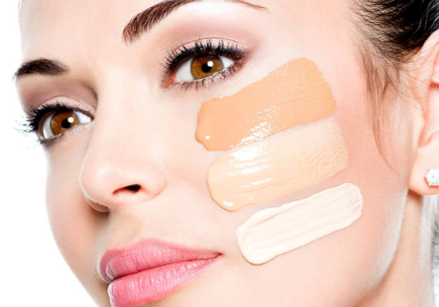
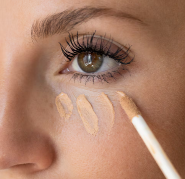
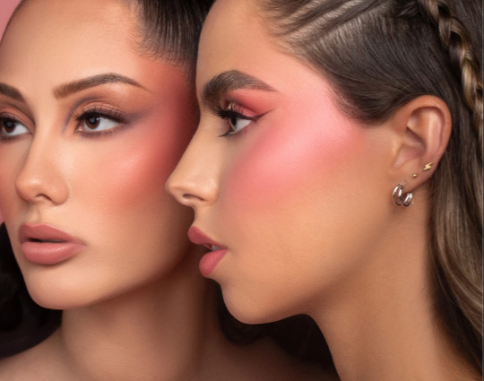

Base de maquillaje
La base ayuda a unificar el tono de nuestra piel y conseguir un acabado más uniforme. Existen diferentes tipos de cobertura.
Maquillaje para el rostro

La base ayuda a unificar el tono de nuestra piel y conseguir un acabado más uniforme. Existen diferentes tipos de cobertura.

El corrector sirve para disimular ojeras, pequeñas manchas e imperfecciones. Es uno de los productos más utilizados.

El rubor aporta color a las mejillas y el iluminador ayuda a dar luz a diferentes zonas del rostro.